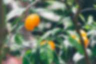
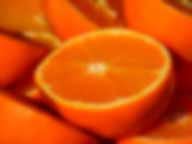

Апельсин

Апельсин (лат. Cītrus × sinēnsis) — плодовое дерево; вид рода Цитрус семейства Рутовые; а также плод этого дерева.
Растение культивировалось в Китае ещё за 2,5 тысячи лет до н. э. В Европу было привезено португальскими мореплавателями. После этого быстро распространилась мода на выращивание апельсиновых деревьев; для этого стали строить специальные стеклянные сооружения, названные оранжереями (от фр. orange — «апельсин»). Апельсиновые деревья растут по всему побережью Средиземного моря (а также в Центральной Америке).
